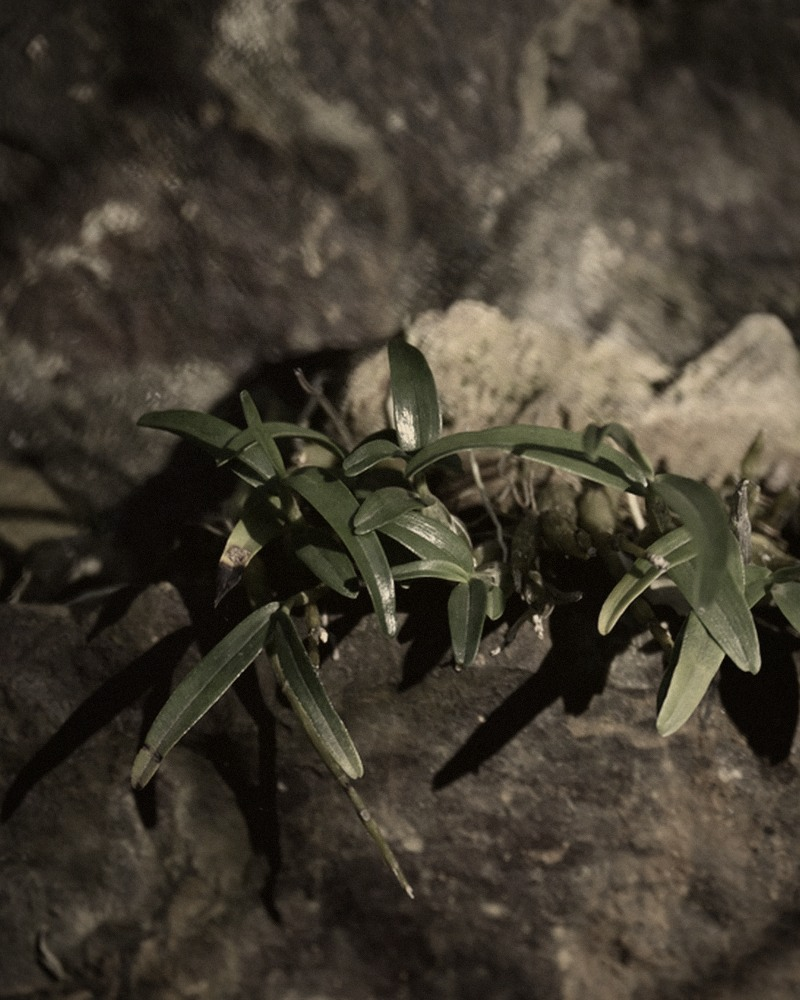
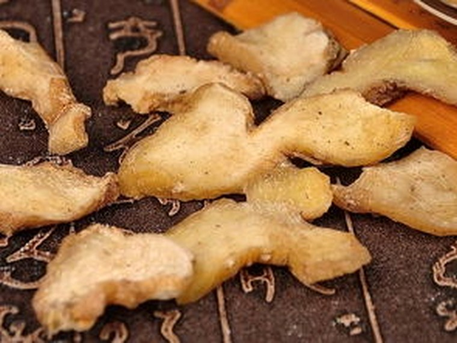
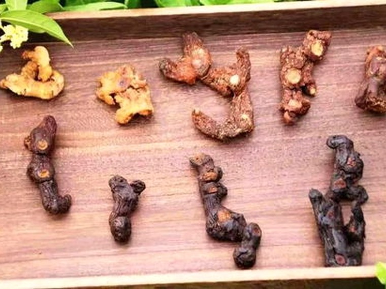
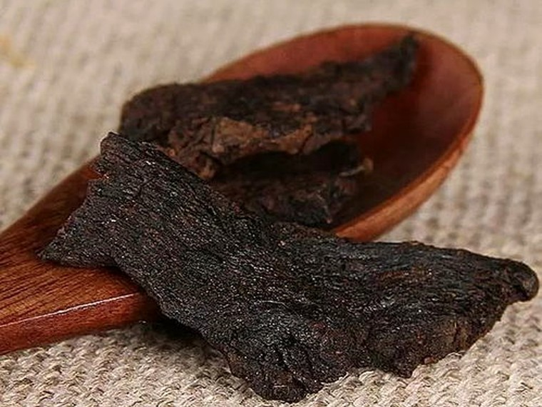
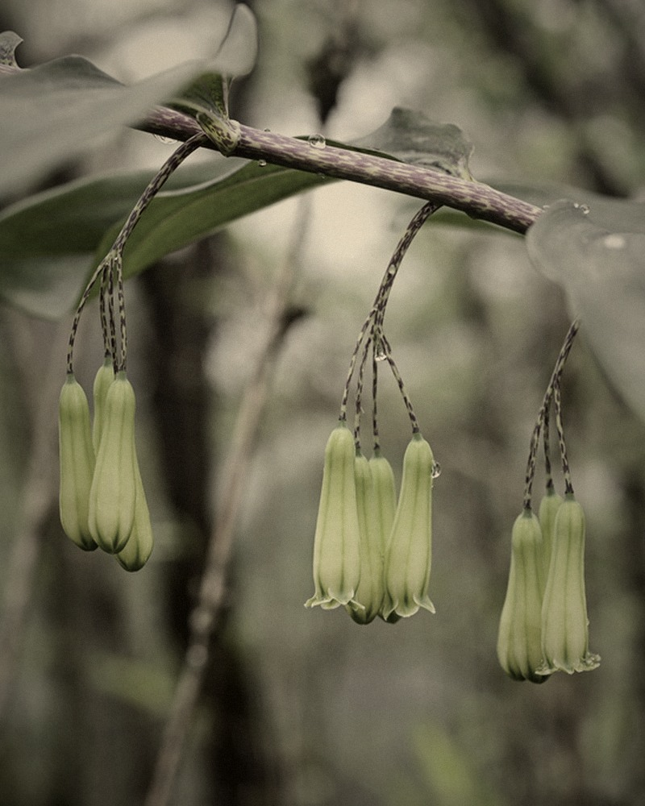
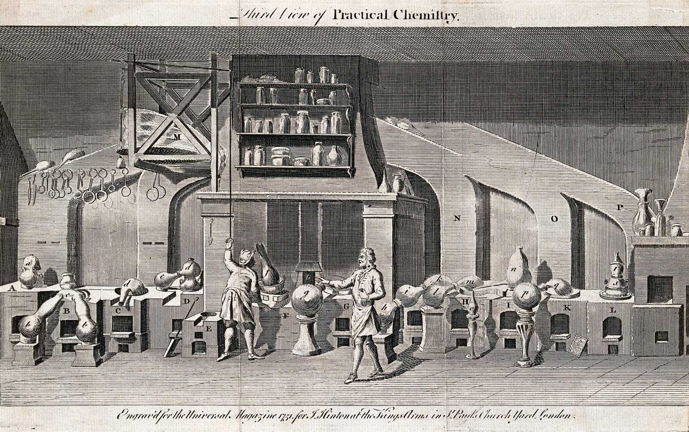
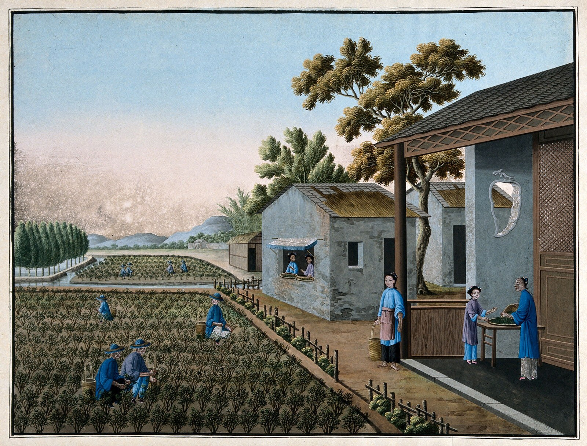
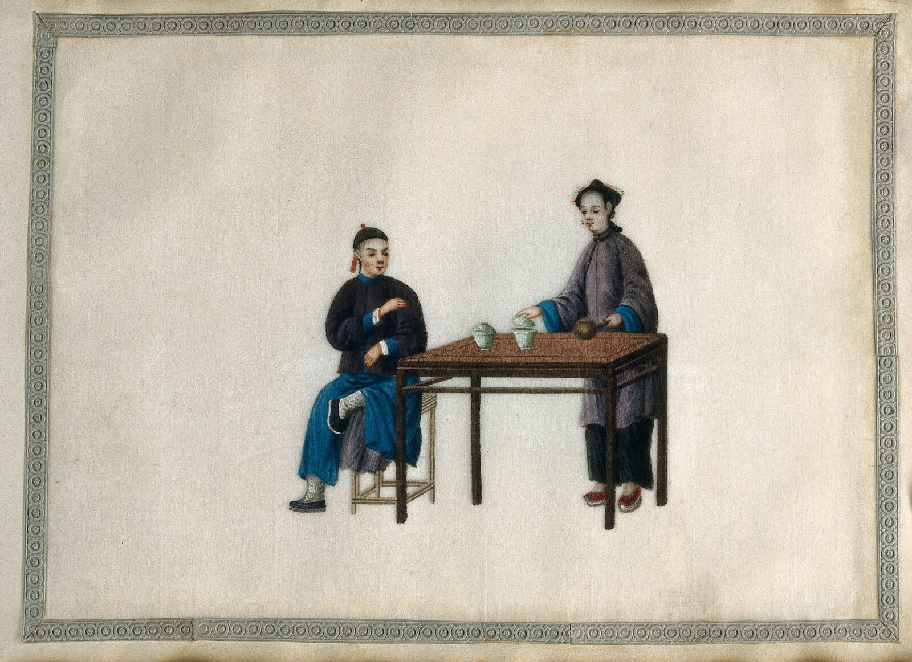

拖拽、滚轮或方向键翻卷 · 点卷轴展开
CHAPTER ONE · MATERIA MEDICA
草木有性，
亦有可测之理。
“物以类从，目随纲举。”《本草纲目 · 凡例》
四气五味 · 植物化学图谱
本草的
性味之数
八味本草，八种可被鼻子、舌头与仪器同时读取的化学指纹。选择一只药斗，看传统性味如何在一张可读的化学谱上留下痕迹。
轻点药斗，右侧图谱与案上药签同时更新。数据为相对指纹强度教学示意。
安徽霍山 · 茎
“石斛，生六安山谷水傍石上。”
《本草纲目 · 草部》

六条墨谱，不比较绝对含量，只记录多糖、生物碱、黄酮、萜类、酚酸与含氮组分的相对权重；点击药斗即可换谱。
味觉不是玄学，它是受体、结构与浓度共同写下的结果。
文献依据：《本草纲目》公版文本；《中华人民共和国药典》2020 年版一部；植物化学分类参考《中药化学》教材。数据用于科普比较，不作为药材质量判定依据。
CHAPTER TWO · PROCESSING
火候，
是可以被记录的。
“九蒸九曝，食之甘美。”传统炮制沿革 · 意译
九蒸九晒 · 虚拟炮制实验室
让时间
改变一味药
生黄精色浅、质脆、麻舌；熟黄精乌黑、油润、甘甜。温度、焖烘时长与蒸制次数共同决定了美拉德反应与刺激性组分的走向。



STAGE PHOTO / POLYGONATUM 生品 · 原根茎切片尚未经历蒸晒。色浅，纤维清晰，含水较高。

Rn = 100 · e−k·N
N 为累积有效热剂量，随温度与焖烘时长非线性增加。仿真用于解释趋势，不用于真实批次预测。还原糖的羰基与氨基酸、肽的氨基相遇，经缩合、重排与聚合生成类黑精；颜色加深、香气转向焦糖与坚果调。
草酸钙针晶、黏液质、皂苷等多因素共同参与生品麻舌感。蒸晒带来的溶解、降解与组织破坏，使它逐步减弱。
它是褐变程度的一个化学指标，却不是越高越好。工艺评价需要同时看感官、成分保留与合理边界。
实验为教学仿真。参数参考传统九蒸九晒工艺区间与一阶动力学假设，不输出可用于生产的炮制参数。
CHAPTER THREE · HYDRODISTILLATION
水与油，
在同一个沸点相遇。
“P总 = P水 + P油”道尔顿分压定律 · 教学表达
水蒸气蒸馏 · 挥发油提取仿真
把一缕香
从蒸汽里取回
薄荷与艾叶的香气来自挥发性萜类。水蒸气降低油相分压，使混合物在低于 100 ℃ 时沸腾；冷凝能力不足时，香气与安全边界会同时失守。

科学依据：道尔顿分压定律；水蒸气蒸馏与挥发油提取原理；《中国药典》2020 年版相关通则。装置为简化教学模型。
CHAPTER FOUR · RHYTHM & TEA
顺时，不是迷信，
是观察身体的时间。
“朝朝盐水，晚晚蜜汤。”民间食养谚语
节气食养 · 时辰节律
一盏茶的
时间坐标
民谣把季节与饮食压成押韵的句子；现代节律研究则用体温、激素与警觉度描画一天。把两者放在一起看，传统经验会变得可讨论，也更有边界。

谚
食养民谚
十二时辰 · 昼夜节律
拨动罗盘，
看时间如何落在身体上
传统时辰作为文化刻度；现代节律给出人群平均的生理趋势。二者并列展示，不互相替代。
拖动指针，或点选时辰
皮质醇晨峰临近，血压与心率开始上行；晨起后接触自然光可帮助校准生物钟。
十二时辰是传统文化的时间模型；现代节律描述来自人群平均的昼夜生理研究，并非一一对应的器官时刻表。
药食同源 · 配伍模拟器
从托盘中取三味，
调一盏属于自己的茶
十味药食同源，以真实药材影像入席。取三味，观寒温、香气与浸出。
配伍位主味 / 辅味 / 佐味
配伍平衡—/ 100

建议水温—
选择三味草本，查看寒热平衡。
浸出动力学解释将在选择后出现。
从十味药食同源食材中取三味，避开同味重复，让香气、甘润与辛香各有一个位置。
以寒温分数与时辰偏好计算平衡，不把“温补”或“清润”当成越多越好。
花叶多用 85℃，根果菌核多用 100℃；浸出是温度、时间与材质的折中。
本模拟只讨论日常食养与浸出条件，不针对任何疾病或个体状况。特殊人群饮用前请咨询专业人员。药材影像为公开网络图片，仅作教学识别示意，详见《素材来源与许可》。
民谣引自民间流传文本；现代节律描述参考睡眠与昼夜节律研究的一般结论。茶饮配方为教学模拟，非处方建议。
CHAPTER FIVE · DOSAGE FORMS
同样是本草，
可以走得快，也可以走得慢。
“丸者缓也，汤者荡也。”传统剂型经验 · 物理化学转译
传统剂型 · 释放动力学
丸散膏丹，
各有自己的时间
汤、散、丸、膏的差别，远不止“怎么做”。介质、比表面积与基质结构共同决定活性成分何时出现、以多快的速度释放。
横向拖动长卷 · 点击剂型查看释放曲线
曲线为教学模型，用于对比不同物理结构下的释放趋势，不代表真实药品的临床行为。
汤剂
科学依据：溶出与扩散原理、现代药剂学中缓控释制剂的基本概念；传统剂型表述见《汤液本草》等公版文献。曲线为教学模拟。
CHAPTER SIX · TRIAL
读过，实验过，
才算真正看见。
“格物者，穷至事物之理。”传统格物观念 · 现代科学注
杏林格物 · 趣味闯关
六道题，
检验你的本草眼力
题目来自前五章的真实交互：美拉德反应、道尔顿分压、生品刺激、剂型扩散、五味化学与浸出温度。答案之后，是一张属于你的通关文牒。
炮制化学
解
TRIAL COMPLETE
格物完成。
答题仅用于科普互动，不提供任何诊疗建议。
印
完成六道题后
在这里合成本草通关文牒
纯古风黑金长卷 · 可导出 PNG
知识点均来自本作品前五章；若有疑问，请回到相应实验与出处。
跋卷终
守千年本草
创智慧新生
把古人的观察，交给今天的仪器再读一遍。
不是把经验奉为结论，而是给它一个可以被验证的入口。